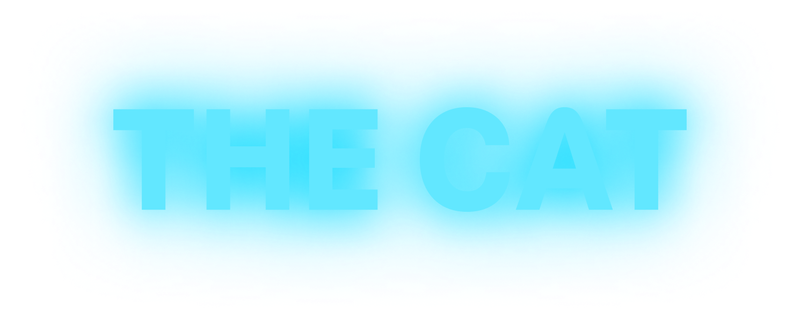
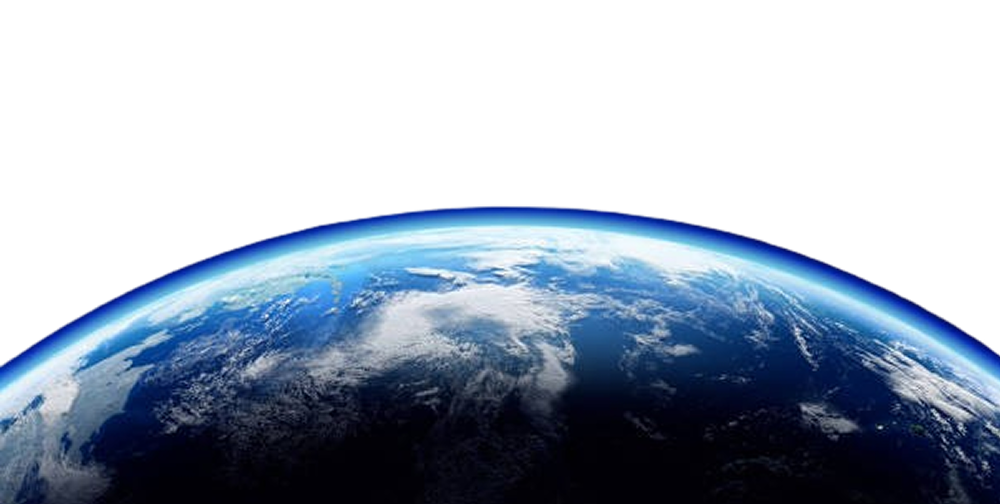
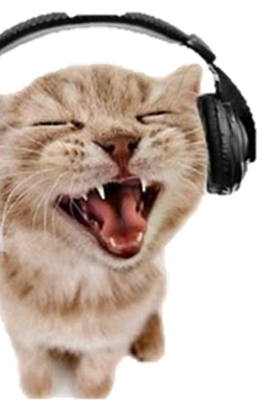
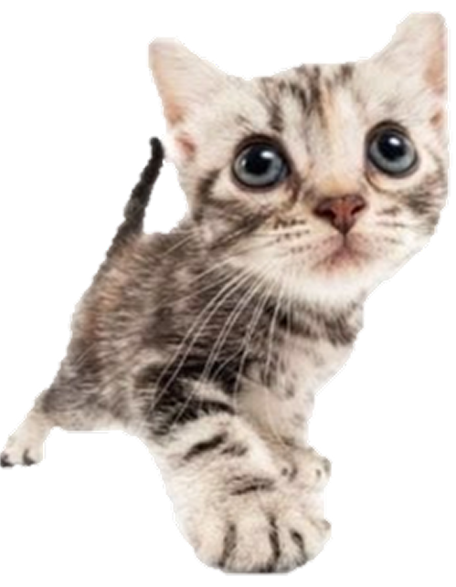
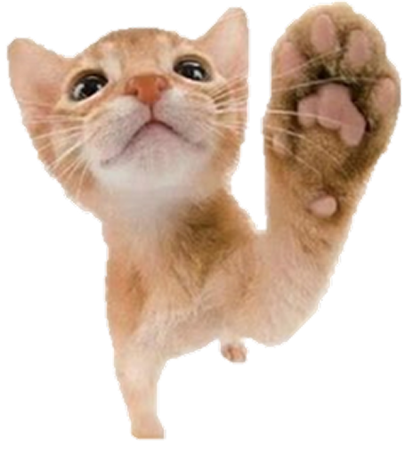
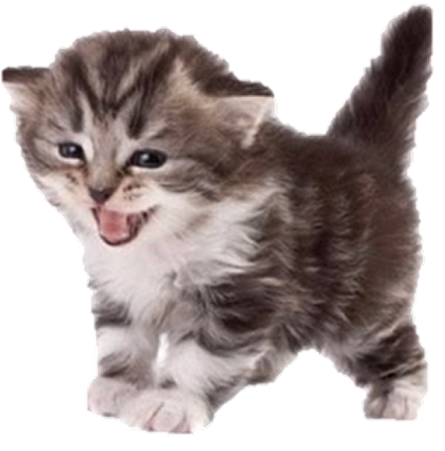
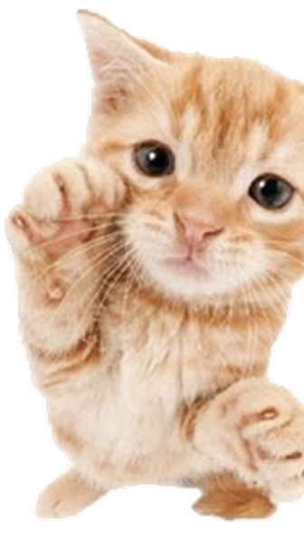
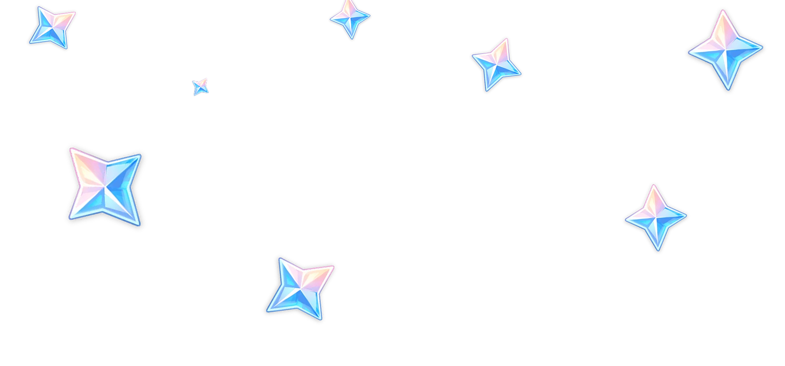

Puede que los perros sean el mejor amigo del hombre, pero los gatos merecen más reconocimiento por su dominio doméstico. Los gatos domésticos superan en número a los perros en una proporción de hasta 3 a 1 en todo el mundo, lo cual es especialmente impresionante dadas sus características definitorias: a diferencia de los perros, que fueron domesticados originalmente por su capacidad para cazar, pastorear y proteger, los gatos nunca fueron utilitarios (aparte de su capacidad para ahuyentar a los ratones).
Los humanos podrían haber adoptado otra especie pequeña, como los tejones o los zorros. Pero los gatos nos predispusieron a amarlos, en parte por sus rostros humanoides —esos grandes ojos nos recuerdan a nuestros propios bebés— y en parte porque no nos temían tanto como otros animales. Ahora los felinos son una obsesión global, especialmente en internet, donde figuras como Grumpy Cat tienen más seguidores (y potencial de ingresos) que muchas celebridades humanas. «En muchos sentidos», escribe Tucker, «[los gatos] nos dominan».